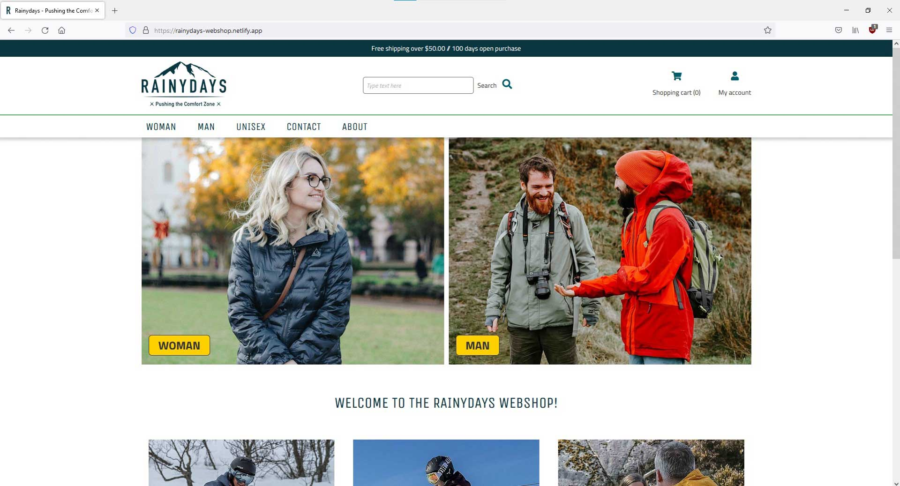
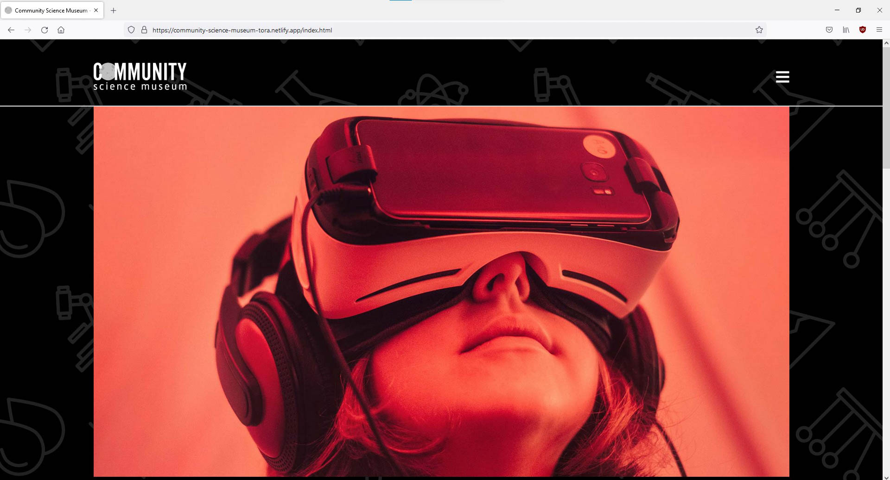
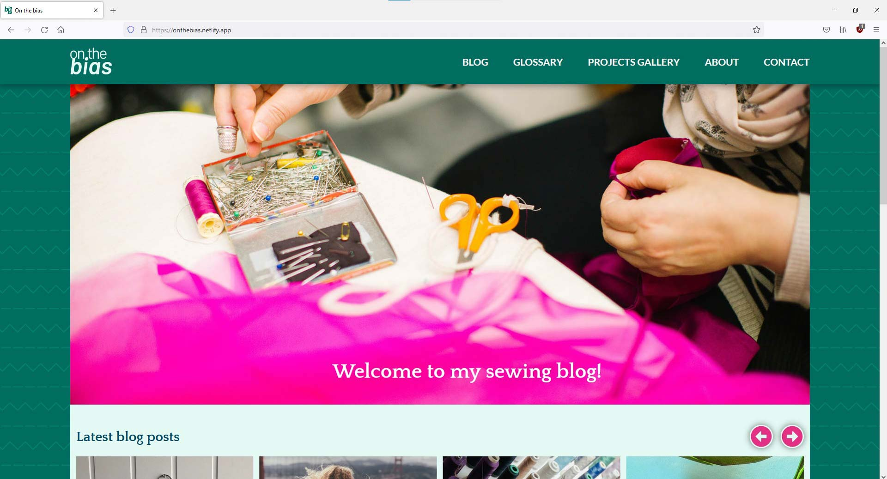

Here is a selection of websites I have designed and built.

Noroff Front-end Development school project. Rainydays is an online shop selling men's and women's rain jackets. Target audience: men and women aged 30 to 50 whose interests are: being outdoors, hiking, exploring, skiing, camping and canoeing. The jackets are mid-range in price and emphasize durability and being suitable for a range of different weather types. In this assignment I learned how to use the WordPress REST API, fetch products added on a headless wordpress site with WooCommerce and add them onto my website. I built the site with HTML, CSS and JavaScript.
Visit website > Visit GitHub repository >
Noroff Front-end Development school project. Community science museum is an interactive science museum with a target audience of primary- and middle school children. The goal was to make a website that was informative and engaging and also encouraged the viewers to visit the museum itself. I built the website with HTML and CSS.
Visit website > Visit GitHub repository >
Noroff Front-end Development school project. On the bias is a sewing blog with posts about the authors' projects and learning material that help you get better at sewing. In this assignment I learned how to make a carousel that shows a few posts at a time and lets the viewer click to see more rows of posts.
Visit website > Visit GitHub repository >